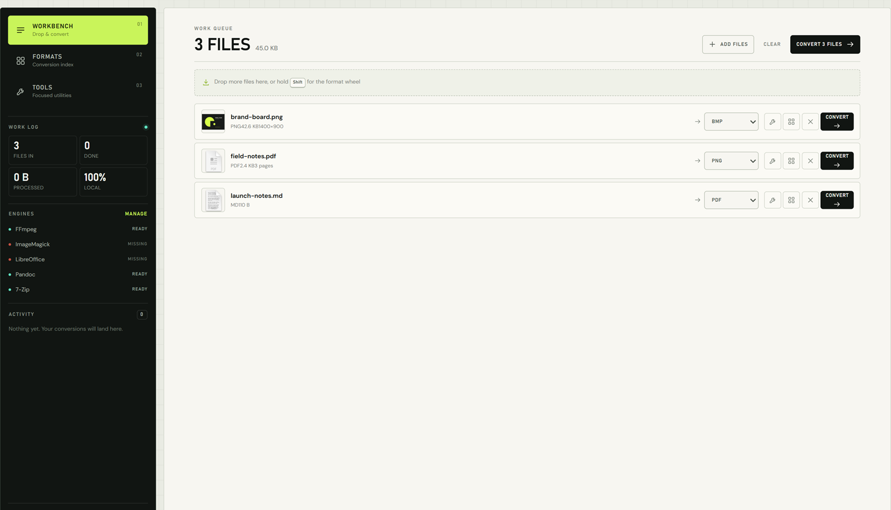
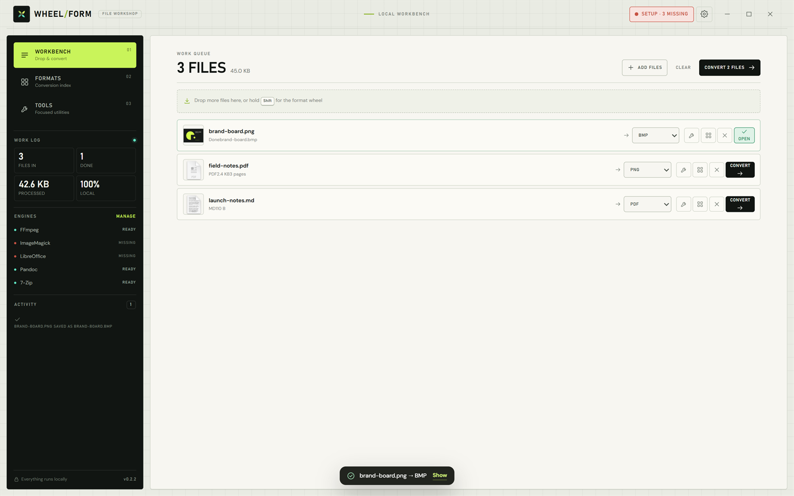
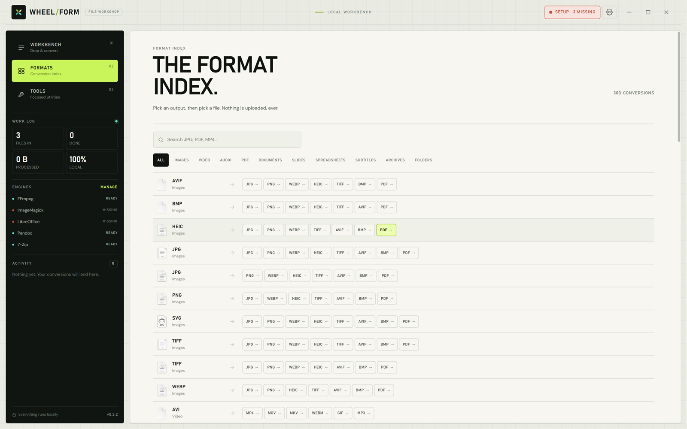
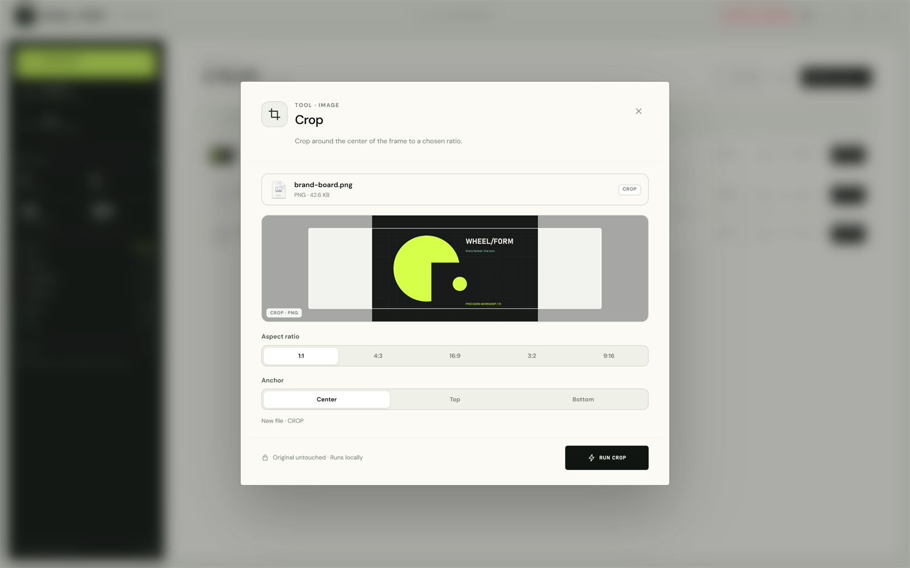
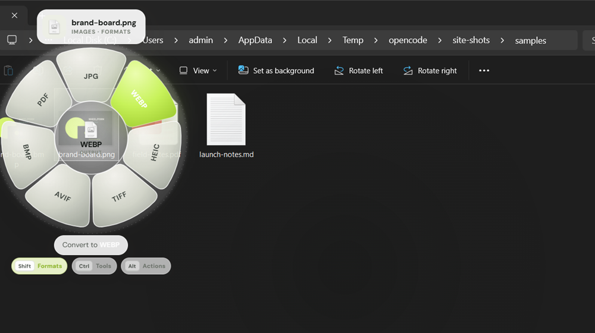
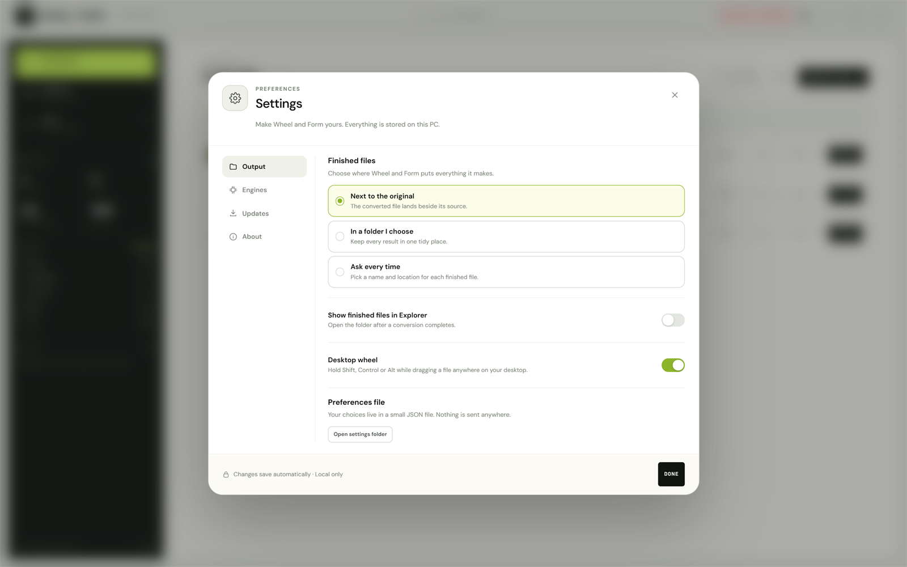
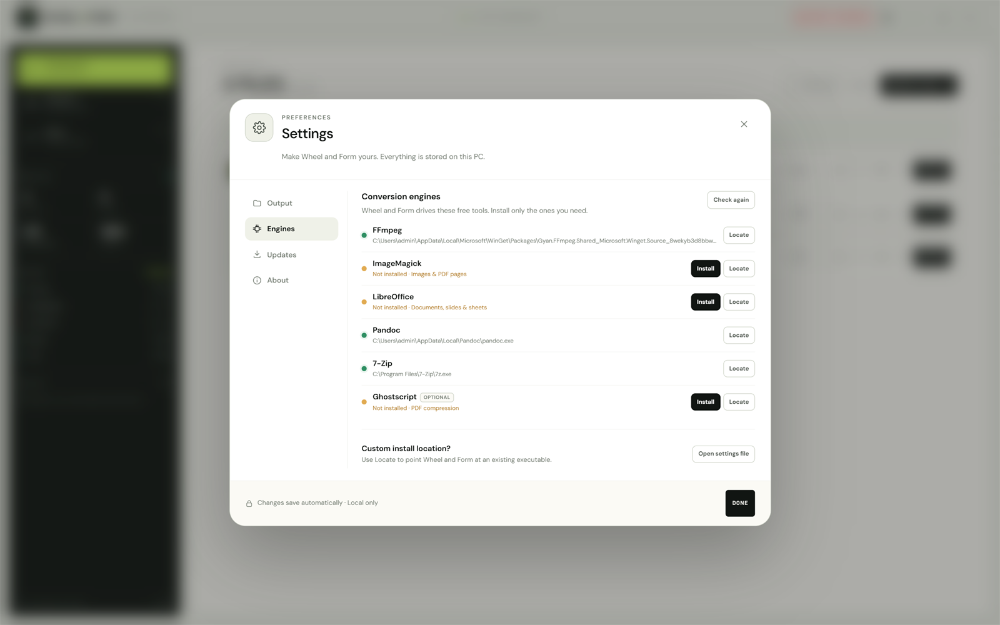

SHIFT01
Formats
303 conversion routes across images, documents, audio, video, ebooks, data and archives.
Convert, compress, extract and shape files on your own PC. Start a drag, hold a key, and finish on the wheel — without an upload, an account, or a queue in someone else’s cloud.

THE GRAMMAR
Wheel and Form turns the modifiers you already hold into one consistent file language. The same wheel appears inside the workbench and across Windows.
The wheel follows the cursor. Choose with a flick; release to commit.
303 conversion routes across images, documents, audio, video, ebooks, data and archives.
26 focused operations: crop, annotate, redact, compress, trim, normalize, split, merge, extract and more.
Six file actions that stay close to the work: share/copy, preview, duplicate, move, copy path and open terminal.
01WORKBENCH
Queue a mixed batch, set a destination per file, and convert. Outputs land beside the source by default, so the file you started with never moves.
The original is never overwritten. Every operation writes a new file.

02FORMAT INDEX
A living index of 53 input and 39 output formats, grouped by family. Search it, filter it, or let the wheel surface the likely targets first.

03TOOLBENCH
26 focused tools for the last mile. Each one runs locally, previews the result, and leaves the original untouched.

Need the full list? The workbench shows all 26 with the formats each one accepts.
04SYSTEM-WIDE
Open Explorer. Start dragging a file. Hold Shift, Ctrl or Alt. The wheel appears at the cursor; choose a destination and release. No app window. No context switch.

Grab a file on the desktop or in Explorer as you normally would.
Shift for formats, Ctrl for tools, Alt for file actions.
Flick to a destination and release. The output lands beside the source.
05THE LOCAL RULE
No account. No upload. No server-side queue. Conversion, tools and previews run on your machine. The only network calls are the update check you can see and engine installs you start yourself.
The default output mode writes the new file next to its source. One folder, one tidy result.
Every conversion and tool writes a new file. Nothing overwrites the input.
Use detected tools or point the app at an existing executable. Missing engines are optional.
GitHub update checks and optional engine installs. Your files are never part of either.
Settings live in a small JSON file on this PC. No telemetry is sent.
The file stays.
The work moves.
No upload. No account. No server queue.
NETWORK LEDGER


06UPDATES
The installed app checks GitHub Releases, verifies the download against the release checksum, and installs on restart. Your files and preferences stay where they are.
The check is visible and can be run on demand from Settings → Updates. Updates are signed by checksum, not by a code-signing certificate.
QUESTIONS
Yes. It is MIT licensed. The installer is not code-signed, so Windows SmartScreen may ask you to confirm the first launch.
No. Conversion, tools and previews run locally. The app contacts GitHub for update checks; optional engine installs use winget. Your files are never sent to either service.
Windows 10 or 11. FFmpeg, Pandoc and 7-Zip are detected automatically. ImageMagick, LibreOffice and Ghostscript add optional routes and can be installed from Settings → Engines.
Yes. Choose beside the original, one folder you pick, or ask every time. The default is beside the source.
Yes. Enable Desktop wheel in Settings, then start a normal file drag on the desktop or in Explorer and hold Shift, Ctrl or Alt.
The installed app checks GitHub Releases, verifies the download checksum, and offers a one-click install. The app restarts to finish the update.
READY WHEN YOU ARE
Windows 10 / 11 · native installer · local-first by default.
v0.2.3 · MIT licensed. Unsigned build; SmartScreen may ask for confirmation.